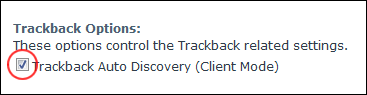

Managing Trackback Options
How to enable or disable trackback auto discovery for a single blog on the Blog module. This can be performed by bloggers on their own blog and by Administrators on any blogs.
- Click the Blog Settings link on the New_Blog module - OR - Click the blog name on the Blog_List module and then select Edit Blog Settings from the View_Blog module actions menu. This opens the Edit Blog page.
- Go to the Trackback Options section.
- At Trackback Auto Discovery (Client Mode), to enable - OR - to disable.
-

Managing Trackback Options